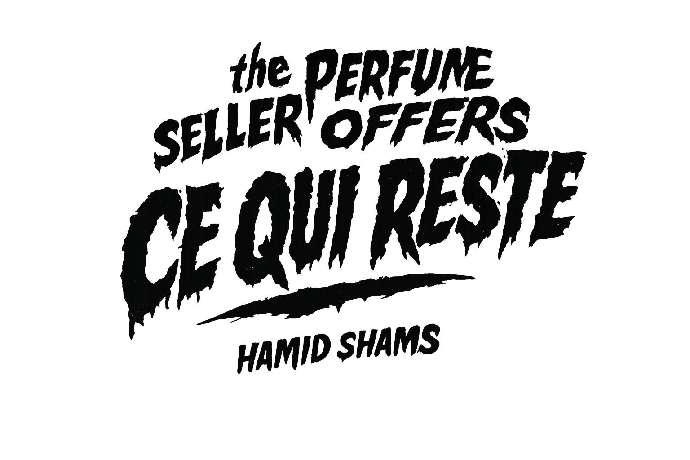

There was no silence
only a rearrangement of bodies
the ground kept everything
without asking
no one counted
no one named
only what remained
could be touched
I arrived after
not as witness
not as mourner
but as one who works
the air was still carrying them
without form
without permission
I collected what did not leave
not the bodies
no
what stayed beneath them
what resisted disappearance
what clung to the place
like a second truth
it had no owner
no history that could be spoken
it was already reduced
I learned how to separate it
slowly
without disturbing the surface
as if nothing had happened
this is how it becomes perfume
not memory
not death
but something that continues
on other skin
you take it
you carry it
you say nothing
and the place
the place appears clean
but it is not
it circulates